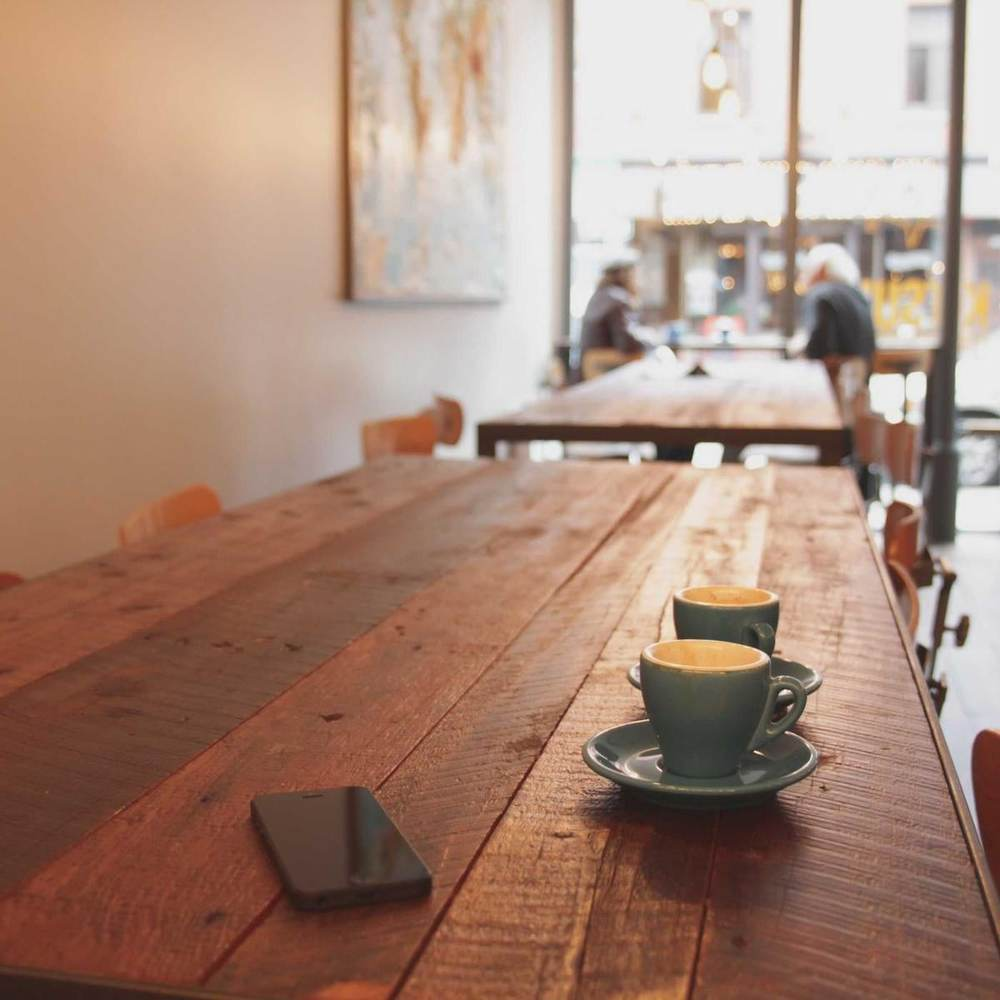

2019年7月20日 · 周六
自动整理已完成 · 12,847 张照片 / 38,204 条消息
今日精选 · 2025年9月10日
六年前的今天，我们在稻城
为你回忆
根据时间、地点和人物自动生成
最近的日子
过去 30 天，你们留下了 486 个瞬间
聚会
从群里约起来的 34 次，成行 27 次
2019年8月10日 — 8月13日
大理 · 洱海边的四天
成行2019年6月18日 · 深夜
说好一起去西藏
没去成后来被重提 12 次，最近一次是 2025 年 3 月
2021年10月1日 · 周五
陈屿的婚礼
成行2017年9月6日 · 周三
军训完的第一顿
建群当天2020年4月11日
疫情后第一次见面
没去成半年后才真的见上，那次只来了 4 个人

2023年5月20日 · 周六
毕业十年，二中门口
成行2025年6月14日
说要去看海
还没去最近一次提起是 11 天前
人物
自动识别出 12 位常出现的人
旅程
按地点与时间自动聚类的 9 次出行
地点
12 座城市，3 个国家
12 座城市 · 3 个国家 最北到海拉尔，最南到清迈
名场面
38,204 条消息里，被反复回看的那些
2019年6月18日 · 毕业前夜
那次说好一起去西藏
周斯年
毕业了咱们去趟西藏吧
陈屿
走
苏念
+1
林知遥
我攒钱
何时
我妈不让
2017年9月6日 · 建群第一天
这个群是怎么开始的
周斯年
建了个群，军训完各回各家之前先把人凑齐
林知遥
名字叫什么
陈屿
老友记·永不解散
苏念
太土了吧
陈屿
八年后你会谢我
2020年7月4日 · 周六 18:40
何时在路上了
何时
在路上了
苏念
人呢
何时
马上到
陈屿
我们吃完了
何时
下次一定
2021年8月3日 · 周二 12:02
陈屿宣布结婚
陈屿
十月一号，都来
苏念
？？？
林知遥
你连恋爱都没说过
陈屿
现在说了
周斯年
伴郎我的
2018年11月22日 · 凌晨
凌晨三点的哲学
何时
你们说十年后我们还会在这个群里说话吗
许清和
会吧
陈屿
睡觉
何时
哦
2024年2月9日 · 除夕
第一个孩子出生
陈屿
[图片]
陈屿
3.4 公斤，母女平安
林知遥
恭喜！！！
周斯年
群里第一个
苏念
我们真的老了
不只是照片
那些年发过的视频、语音、文件和链接，都还在
这一年的这一天
9月10日 · 过去 8 年，你们过了 7 次
温言
21:48
这顿我请，谁都别抢。周斯年今天升职，八年前他连食堂三楼都嫌贵。
那天 216 条消息 · 34 张照片
苏念
08:30
给班主任寄的茶到了，她回了条视频，说还记得我们那届晚自习偷偷打牌。
那天 74 条消息 · 8 张照片
陈屿
22:16
天台十二个人，仙女棒买多了两盒。明年这天谁都别请假，接着放。
那天 431 条消息 · 126 张照片
周斯年
23:04
出差第四天，酒店窗外就这样。替你们看一眼，明天赶早班机回。
那天 38 条消息 · 5 张照片
2020 年 9 月 10 日没有内容
那年秋天大家都在各自的城市，群里最近的一条消息在 9 月 4 日。往前后翻翻，或者看看别的年份。
林知遥
07:52
开学第一天绕了后山那条路，比大道好走，还早到十分钟。以后都走这边。
那天 168 条消息 · 41 张照片
钟晚
16:20
花是何时挑的，他在花店站了半小时，最后选了最不起眼的那束。老师说很好看。
那天 96 条消息 · 19 张照片
江野
18:41
军训结束，帽子扔了，在草地上躺了一下午，谁也没说话。这群才建了五天。
那天 254 条消息 · 63 张照片
相簿
系统按照片里的东西自动归的类，也可以自己建
群小传
这个群自己长出来的样子
老友记 · 永不解散
2017年9月6日建群 · 到今天 2,926 天
深夜发言最多，照片里反复出现的是同一张餐桌。八年里热闹过三次：毕业、两场婚礼、一个孩子出生。有四个人从没缺席过任何一次聚会。
- 消息
- 38,204
- 照片
- 12,847
- 在群成员
- 12 / 14
- 聚会
- 34 次
话最多陈屿 · 6,412 条
最晚睡何时 · 平均 01:47
第一句话「建了个群，军训完各回各家之前先把人凑齐」
最长的一次2019年7月20日，连着聊了 6 小时 12 分
老友记·永不解散 · 2017年9月6日 起 · 2,926 天 · 38,204 条消息 · 12,847 张照片
已整理到 2025年9月9日 · 3 分钟前
图库
12,847 张照片 · 2,918 段视频 · 从 2017年9月6日 到 2025年9月9日
12,847 张 · 8 年
没有符合条件的照片
当前筛选把这一屏的内容都排除了。去掉一个条件试试。
2025年9月
2025年8月
2025年7月
2025年6月
2025年5月
2025年4月
2025年3月
2025年2月
9月9日 星期二
这一天 14 张 · 4 条消息 · 最早 07:42，最晚 21:16
9月6日 星期六 · 建群八周年
这一天 63 张 · 2 段视频 · 412 条消息 · 21 人在场
9月1日 星期一
这一天 47 张 · 走了 8.6 公里
8月30日 星期六 · 苏念搬家
这一天 22 张 · 从旧公寓搬到滨江
8月24日 星期日 · 莫干山第二天
这一天 81 张 · 走了 14.2 公里 · 海拔最高 719 米
8月23日 星期六 · 莫干山第一天
这一天 75 张 · 走了 9.8 公里
8月15日 星期五
这一天 26 张 · 叶生把猫带到了滨江
已显示到 2025年8月15日 · 库内最早是 2017年9月6日
已整理到 2025年9月9日
老友记 · 永不解散
还有 钟晚、叶生
2017年9月
2017年9月6日 星期三
建群第一天 · 31 条消息 · 4 张照片 · 9 人在场 · 杭州
周斯年 创建了群聊「老友记 · 永不解散」
林知遥、陈屿、苏念 等 9 人加入了群聊
建了个群，军训完各回各家之前先把人凑齐。以后别一个个私聊了，都在这儿报个到
宿舍楼下这块草坪，以后天天见
🥹🥹
刚从操场回来，胳膊晒脱了一层皮，谁有芦荟胶
@苏念 我这有一整瓶，晚点给你送 407。@所有人 群名先这么定了，谁都别改
2019年9月10日 星期二
稻城亚丁第三天 · 214 条消息 · 186 张照片 · 3 段语音 · 8 人在场 · 四川 稻城
我在扎灌崩的换乘点了，你们几点从民宿出发
六点半吃完早饭就走。@江野 你在哪个岔路等我们，别又跑到前面去了
民宿门口的雾还没散，队伍已经在脊线上了
0:23
我们已经上到珍珠海了，这边全是雾，能见度就十几米，跟仙境一样，你们快点跟上啊
这海拔走两步就喘，四千米真不是开玩笑的，谁带葡萄糖了
我包里还有六支，原地等我三分钟，别再往上走了
半山腰回头拍的，盘山路都在脚底下了
知遥这构图，比我去年结婚请的摄影师强
温言 撤回了一条消息 本地已留存
翻过这道垭口就是牛奶海，风一下子停了
0:09
哈哈哈哈周斯年那个表情，你们快看第四张
🫣
存下来了，这张以后当群头像
许清和+1
江野+1
温言同意
罗一鸣就这张
叶生+1
0:52
下撤时草甸上的光，一分钟不到就没了
周斯年 发出红包「今天都活着下来了」
¥ 188.00 · 8 人领完 · 手气最佳 叶生
2022年5月21日 星期六
陈屿和苏念的婚礼 · 438 条消息 · 261 张照片 · 1 段视频 · 12 人在场 · 杭州
人到齐了，中庭集合拍全员合影，别躲在后面
先发九张，剩下的晚上传原图
第八张裁一下能直接当请柬封面，晚点把原图发我
何时 转账给 林知遥
¥ 600.00 · 备注「相机租金，别推」· 已收款
0:47
谢谢你们今天都来了，尤其是从北京赶回来的那几个。我刚翻了一下群相册，二〇一七年九月六号第一张照片到今天，正好一千七百多天，感觉像上周的事
温言 把群名改为「老友记 · 永不解散 · 屿念大喜」
三天后群名被改回「老友记 · 永不解散」
2025年9月9日 星期二 · 昨天
57 条消息 · 12 张照片 · 2 段语音 · 6 人在场 · 杭州
昨晚导进去的，八年的东西三分钟就理完了
0:41
我刚点进去看了，它把二〇一九年稻城那三天单独剪成了一段影片，连江野在山上瞎唱的那段原声都留着，我在办公室笑出声了，你们赶紧去看
翻到二〇一七年建群第一条了，那会儿我们真年轻，连头像都还是照相馆拍的
今天又去了一趟东山岛，跟二〇一八年同一个机位
明早六点车库集合，别赖床
人物
12 个已经认出来的人，还有 45 张脸等着被叫出名字。
地点
12 座城市，214 个地方。10,927 张照片带着位置信息。
点越大，那座城市留下的照片越多。点一下跳到它的卡片。
杭州
2017年9月 — 2025年9月
大理
2021年10月 — 2024年4月
川西
2023年10月 — 2023年10月
青岛
2018年8月 — 2022年7月
成都
2019年1月 — 2025年2月
厦门
2017年12月 — 2018年1月
京都
2019年4月 — 2019年4月
上海
2018年5月 — 2025年1月
舟山
2019年8月 — 2019年8月
呼伦贝尔
2018年7月 — 2018年7月
黄山
2020年10月 — 2022年11月
香港
2019年2月 — 2023年12月
话
38,204 条消息 · 128 万字 · 2017年9月—2025年9月
这些词在别的地方没人这么用，只有这个群知道它什么意思。
又鸽了412 次
答应了但没来。最早出现在 2018年3月，何时第一次缺席烧烤之后。
「何时又鸽了」—— 苏念，2018年3月17日
老地方367 次
指学校后门那家已经关门的烧烤店。店 2021 年拆了，词还在用。
「老地方见」—— 周斯年，2017年10月2日
在路上了214 次
表示还没出门。平均从说出这句到真的到达是 78 分钟。
「在路上了」—— 何时，2018年5月19日
三缺一186 次
最初指打牌，2020 年后泛指任何差一个人的场合。
「三缺一，谁来」—— 陈屿，2017年11月8日
下次一定178 次
鸽了之后的标准道歉。统计上，说完这句后的下一次到场率是 41%。
「下次一定」—— 何时，2018年6月9日
人齐了吗143 次
发起聚会的固定开场白，问完通常还要等 40 分钟。
「人齐了吗」—— 林知遥，2017年9月20日
随便131 次
被问吃什么时的标准答案。每次出现后平均还要再讨论 23 分钟。
「随便」—— 全员，长期
八年后你会谢我27 次
陈屿起群名时说的，后来变成群里一切离谱决定的挡箭牌。
「八年后你会谢我」—— 陈屿，2017年9月6日
每年说得最多、而前后几年都没这么说过的词。连起来看，是这群人的人生阶段。
- 2017军训食堂补考篮球熄灯
- 2018实习简历通宵烧烤考研
- 2019毕业答辩散伙饭西藏offer
- 2020改期居家网课健康码裁员
- 2021婚礼伴郎房子加班份子钱
- 2022露营副业存款咖啡失眠
- 2023十年出差相亲体检房贷
- 2024孩子奶粉换工作爸妈中年
- 2025爬山存钱老照片血压聚一次
话最多
陈屿
6,412 条 · 占全群 16.8%
最晚睡
何时
平均最后一条 01:47
最爱发语音
温言
1,204 条 · 共 14 小时
最长的一次
6 小时 12 分
2019年7月20日 · 散伙饭当晚
全群总字数
128 万字
约等于 3 本《三体》
最安静的一天
2020年4月11日
0 条 · 那次聚会第三次改期
八年里每个小时的说话量
06121823
应约次数和实际到场次数，来自聊天记录和当天有没有照片的比对。
| 人 | 应约 | 到场 | 到场率 |
|---|